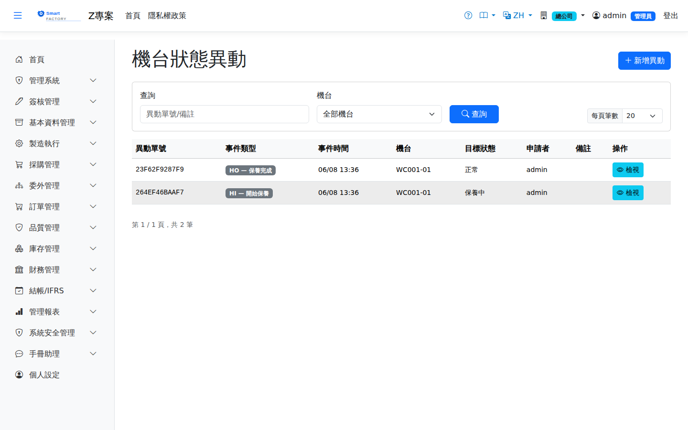

機台狀態異動Machine Status Events
路由：/MachineStatusOrder | 機台即時狀態登記（故障/維修/待料）Route: /MachineStatusOrder | Recording live machine status (breakdown / repair / waiting for material)
登記機台的非計畫狀態異動：故障、維修、待料、待模具等。狀態時段納入稼動率與 OEE 的停機扣除，並反映在排程引擎的機台可用性。Records unplanned machine status changes: breakdown, repair, waiting for material, waiting for tooling and so on. The period counts as downtime in utilisation and OEE and feeds through to machine availability in the scheduler.

機台狀態異動畫面截圖（示意，實際欄位/資料依權限與查詢條件而異）Machine status change screenshot (illustrative; actual fields and data vary by permission and query criteria)
查詢Search
1
查詢列輸入條件後點「查詢」；欄位標題可點擊排序，清單下方有分頁導航。Enter your criteria on the query bar and click "Search"; column headers can be clicked to sort, and the paging controls sit below the list.
作業流程Process
登記異動Record change
1
點「新增」，選機台、狀態類別與起始時間。Click "Add", then choose the machine, the status category and the start time.
2
狀態解除時回到單據補登結束時間。When the status is cleared, go back to the document and enter the end time.
對派工的影響Effect on dispatches
機台狀態一變更，系統就處理該機台上的派工（手機「機台狀態」同一規則）：As soon as the machine status changes, the system deals with the dispatches on that machine (the mobile "Machine Status" screen follows the same rules):
| 機台轉為Machine changes to | 派工的處理What happens to dispatches |
|---|---|
| 不可生產（故障、保養、外修、改裝、外借、廢棄）Cannot run (breakdown, maintenance, external repair, modification, loaned, retired) | 已排未開始的退回「待排」，下次排程改排到其他機台；準備中、準備完成、待首件、生產中的轉為「暫停」（原因：機台停用），不會被排程移走。Scheduled dispatches that have not started go back to "Pending" and are placed on another machine at the next scheduling run; dispatches in setup, ready, pending FPI or in progress go on hold (reason: machine down) and are not moved by scheduling. |
| 正常、待機Available, standby | 因機台停用而暫停的派工自動恢復到暫停前的狀態。檢驗不合格造成的暫停不受影響。Dispatches held because the machine was down return automatically to their status before the hold. Holds caused by failed inspections are not affected. |
機台要修很久、派工等不了時，到If the machine will be down for a long time and the work cannot wait, use 派工作業 → 暫停處理Dispatch Operations → Handle hold「換機續做」。機台狀態一律在本畫面（或手機）變更；工作中心主檔不能改既有機台的狀態。 and choose "Switch machine". Machine status is always changed on this screen (or on mobile); the work center master cannot change the status of an existing machine.
欄位說明Field reference
查詢條件Query criteria
| 條件Condition | 說明Guide |
|---|---|
| 查詢Search | 異動單號或備註的模糊比對Partial match on the change document number or the notes |
| 機台Machine | 只看單一機台的狀態異動Status changes for one machine only |
清單欄位List columns
| 欄位Field | 說明Guide |
|---|---|
| 異動單號Change doc No | 系統採番，不可修改Numbered by the system; not editable |
| 事件類型Event type | 狀態異動的性質（保養、故障、停機、復機等）Nature of the status change (maintenance, breakdown, stop, restart …) |
| 事件時間Event Time | 必填Required 狀態實際變更的時間點；停機時數統計與 OEE 以此區間計算When the status actually changed; downtime statistics and OEE are calculated over this period |
| 機台Machine | 必填Required 狀態異動的對象機台Machine whose status changed |
| 目標狀態Target Status | 必填Required 機台切換後的狀態；狀態為停機類別時排程不會安排新作業Status the machine switches to; while it is a downtime status the scheduler puts no new work on it |
| 申請者Requested By | 提出異動的使用者User who raised the change |
| 備註Notes | 異動的補充說明（故障現象、處理方式等）Notes for the change (symptoms, what was done …) |